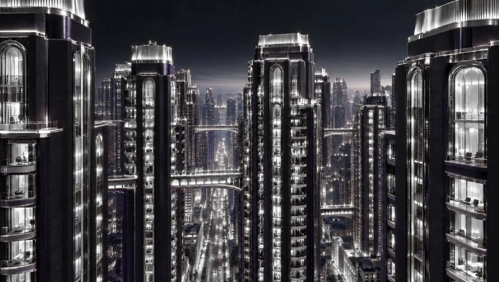
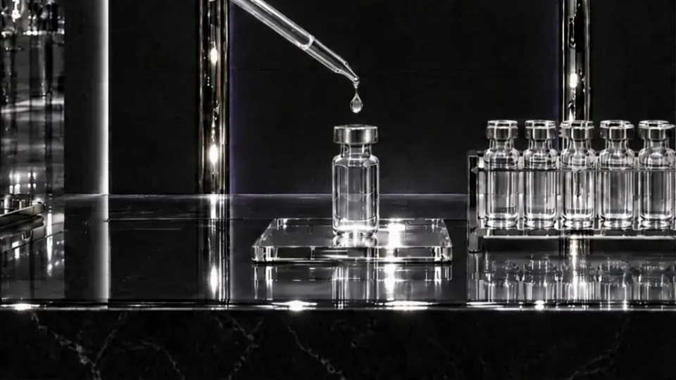

GRAND OPENING
PEPTICITY
JOIN THE PEPTICITY TEAM
15% OFF YOUR FIRST ORDER

THE VIALSee-through label, lit from below.

THE LAB
THE MONTHLY LETTERGrace writes to the team once a month.

THE DOORS
FIRST WORD ON RESTOCKSThe team hears first.